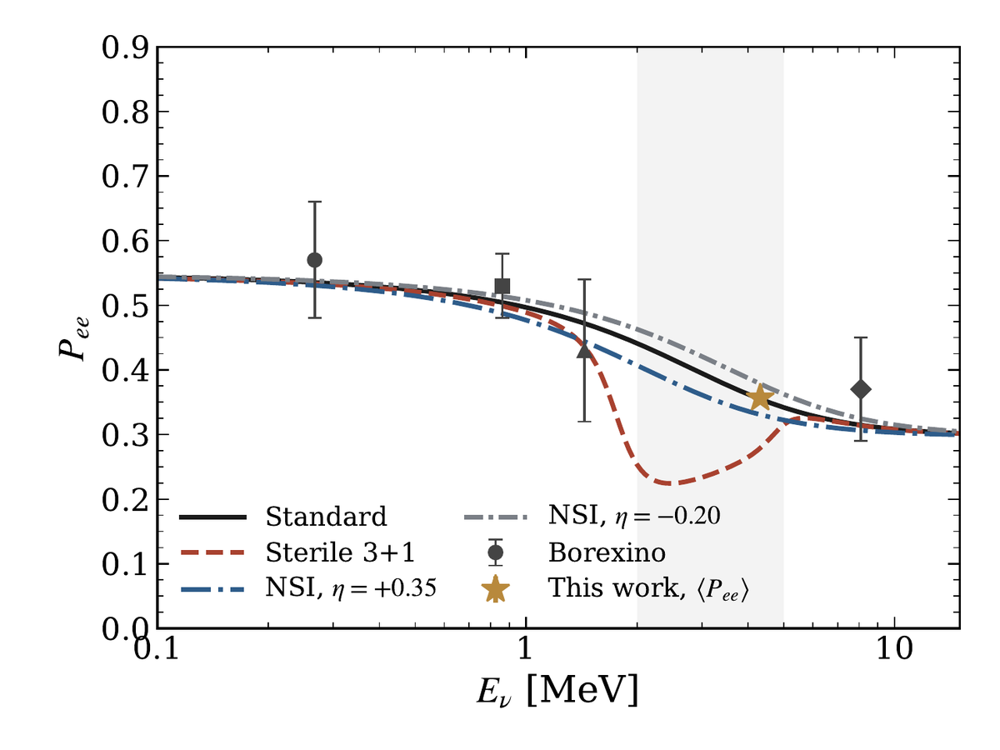

Hi, I'm Dristii
Undergraduate researcher in physics · Centre for High Energy Physics, IISc
I'm a third-year physics student at the Indian Institute of Science. I work on neutrino detection, mostly with computer models that estimate what a detector would see from a supernova or from the Sun, and how well it could tell one idea from another.
I work with Dr. Biswaranjan Behera, and I'm contributing a module to SNEWPY, an open-source Python package used by the supernova neutrino community. I like to check my calculations against published numbers, and to write down honestly where they don't match.
Right now
- Writing up a paper with Dr. Behera on sterile neutrinos and solar neutrinos. Read the summary.
- Pull request #453, a diffuse supernova neutrino background module, is under review for SNEWPY 2.0.
- Looking for research internships, and for PhD programmes in neutrino and particle physics when I finish in 2028.
Research
The group works with deuterated liquid scintillator (DLS) detectors. Deuterium lets one detector respond to several kinds of neutrino reaction, which helps to separate the flavours. My work is computational and has three parts.
Solar neutrinos and a possible sterile neutrino
Boron-8 neutrinos from the Sun have not been measured in real time between about 2 and 5 MeV. Existing detectors run into backgrounds or thresholds there. A DLS detector can reach that range.
I compute how a light sterile neutrino would change the survival probability of these neutrinos, by evolving the quantum state numerically through the Sun. The benchmark case has a clear dip near 2.5 MeV. For a 1 kton detector running for 10 years, it could be told apart from the standard curve at about 6σ, once a fiducial cut and a background are included. I also compare four detector media, the day-night asymmetry, and JUNO's elastic-scattering channel. The paper lists what I have not checked yet, such as how the benchmark sits against existing solar data.

Building the event-rate model
The starting point was an event-rate pipeline for supernova neutrinos in these detectors. It covers the neutrino flux, deuteron cross sections, the detector's light response, and the charged-current, neutral-current and elastic-scattering channels. I built it from the published description of an earlier study (Chauhan, Dasgupta and Datar, 2021), without their code. Neutral-current rates agree to within 1 to 3%. The charged-current rates started 17 to 20% off. I ruled out a coding error with a second, independent implementation, and found the cause in coarse sampling of the printed cross-section tables. With the original tables the gap fell below 4%. I then extended the model to recoil-neutron spectra and secondary scintillation.
Neutrino mass ordering across eight detectors
Using that model, I compared eight detector configurations, from water and heavy water to doped and loaded scintillators, on how well a future galactic supernova could reveal the ordering of the neutrino masses. Using time-dependent supernova fluxes with adaptive time-binning recovers sensitivity from the early accretion phase, which whole-burst analyses wash out. The comparison also showed that the choice of supernova simulation changes the answer more than most detector choices do.
Open source
SNEWPY: diffuse supernova neutrino background module
SNEWPY turns supernova simulations into predicted detector signals. I'm adding a module for the diffuse supernova neutrino background, the faint, steady flux from all past supernovae in the universe. It computes the redshift-dependent flux from cosmological core-collapse rates and mass-weighted progenitor spectra, with flavour conversion for both mass orderings. It reuses SNEWPY's existing flux, flavour-transformation and rate-calculation tools instead of duplicating them, and I checked it against published calculations.
The module has a 28-test suite, and I've revised it several times after the maintainers' feedback. I'm also reading through the existing tutorials and notebooks as a new contributor, and noting the inconsistencies and rough spots I find.
Independent projects
I learn a method by implementing it end to end, checking it against published numbers, and writing down where it does not match. Three of these projects are on GitLab.
Diffuse supernova neutrino background sensitivity
A first-principles calculation of how long Super-Kamiokande with gadolinium and JUNO must run to detect the background. It matches the published detection table to rounding precision and adds new sensitivity maps over the neutrino energy and the black-hole fraction. A remaining 15% difference in signal rate is documented, not corrected by hand.
Directional solar-neutrino detection in Borexino
A simulated detector that uses the faint directional Cherenkov light in a scintillation signal to tell which events point back to the Sun. A Bayesian fit returns the signal count with credible intervals. In a calibration check, the 68% intervals covered the true value in 73% of 30 trials.
Finding GW150914 in public data
A matched-filtering pipeline from raw data to detection. It recovers the first gravitational-wave event independently in both LIGO detectors, with signal-to-noise ratios of 17.55 and 13.10, within about 30 ms of the published merger time.
Notes
I write short posts about what I'm learning, and about the mistakes I find in my own code. Some are for anyone who is curious, and some are technical. A few to start with:
- Two bugs in one HamiltonianIn depth · from the sterile-neutrino work
Overlap-based eigenvector tracking needs the flavour basis and a real one-to-one assignment, and a residual that did not shrink with resolution was a modelling error.
- Reproduce a paper from scratch: what it teaches that reading does notFor everyone · for students
A practical guide for undergraduates who want to get into research through a published result.
- When the independent cross-check disagreesIn depth
Two episodes where an independent check misled me, and the habits that came out of them.
- What does 5 sigma actually mean?For everyone
A discovery threshold explained with something anyone can imagine: tossing a fair coin.
Education & honors
BS (Research) Physics, Indian Institute of Science, Bengaluru
Coursework so far includes classical mechanics, electromagnetism and quantum physics of radiation, thermal physics and materials, and quantum measurements. I was admitted through JEE Advanced 2024 (AIR 1925) and JEE Main 2024 (AIR 3898).
Schools, workshops and reading
Skills
Beyond the lab
Outside physics
I enjoy sketching, crocheting, and occasionally playing simple tunes on my keyboard. I also love trying things that take me a little out of my comfort zone, like bungee jumping, ziplining, and paragliding.
Contact
Email is the best way to reach me. I'd be glad to hear from anyone working on neutrino detection or SNEWPY, and from students who are reproducing a paper and got stuck. My CV has the full details.